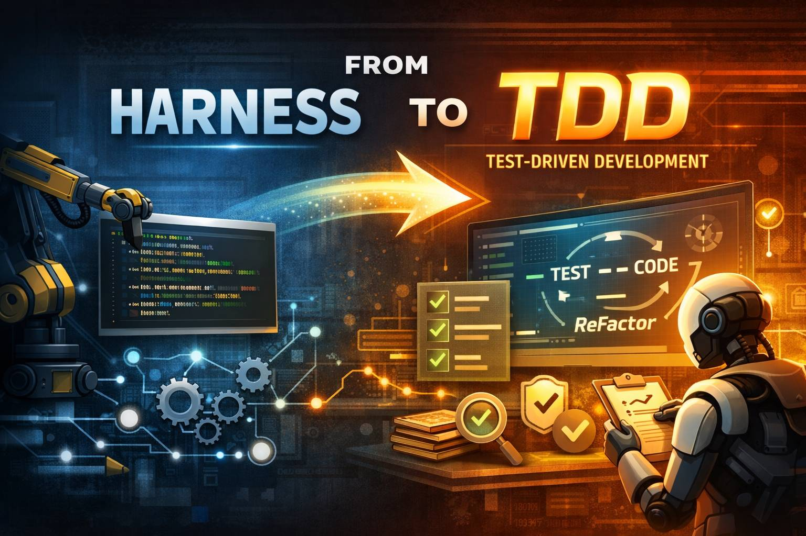

Prompts That Dramatically Reduce AI Rework: Test-Driven Development for AI coding agents.

A collection of battle-tested prompts for applying Test-Driven Development (TDD) with AI coding agents (Claude, GPT, Gemini, Codex, etc.).
The core idea: TDD embeds long-term memory directly into your source code — so when your AI agent loses context, the tests remember what the code is supposed to do.
Long-term memory for planning → Markdown files
Long-term memory for development → TDD
Humans struggle with TDD because MVP deadlines feel urgent. AI agents have the same time pressure — but unlike humans, they can actually handle the workload.
TDD doesn't shine during MVP development. It shines:
| Harness | TDD | |
|---|---|---|
| Purpose | Build MVP fast | Ensure long-term code quality |
| QA | Included | Separate, after tests pass |
| When to apply | First (MVP phase) | After MVP is stable |
| Scope | New features | Entire codebase refactor |
They can be used together, but it's wise to apply them separately — build with Harness first, then harden with TDD.
1. Start TDD
2. Full-Scope TDD
3. Uninterrupted Multi-Agent
4. Progress Check
5. Verify Tests
Even after finishing TDD, the main agent often won't run the test suite and will just hand it back to you.
6. QA & Code Review
TDD is a development methodology where AI catches errors at build time (source code level) — before runtime (when users encounter them). The formal definition of TDD is different, but in the AI era, this interpretation works.
If you've been relying on markdown files for long-term memory because session memory disappears, TDD becomes a way to embed long-term memory directly into the source code.
Planning memory → Markdown files
Development memory → TDD